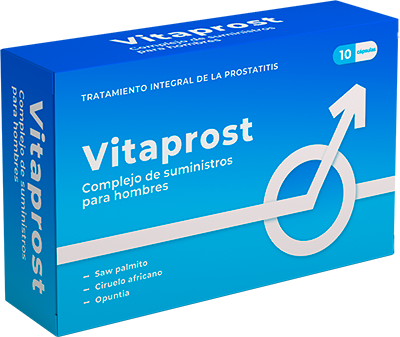

PROSTATITA ESTE PERICULOASĂ PENTRU SĂNĂTATE-ESTE O BOALĂ CARE AFECTEAZĂ ÎNTREGUL CORP AL UNUI BĂRBAT!

Chiru Marian
Urolog șef
Director al Centrului de Oncourologie, lector la Universitatea de Urologie, profesor, chirurg practicant în Europa. Specializată în următoarele operații: prostatectomie radicală folosind un robot de TURP (rezecția transuretrală a glandelor sau a prostatei) și enuclearea cu laser a adenomului de prostată.
Concomitent cu apariția prostatitei în viața unui bărbat, este foarte probabil ca acesta să se confrunte cu următoarele probleme:
● IMPOTENŢĂ
● ADENOM SAU HIPERPLAZIE DE PROSTATĂ
● CANCER DE PROSTATĂ

Lucrul rău este că în 96,7% din cazuri, bărbații care suferă de prostatită se confruntă mai devreme sau mai târziu cu așa-numita impotență masculină, adică disfuncție erectilă, care este o încălcare a vieții sexuale a unui bărbat din cauza incapacității de a obține sau de a menține o erecție.
Cancerul de prostată apare de obicei în stadiile tardive ale inflamației adenomului prostatic ca o consecință previzibilă a prostatitei. Bărbații care nu acordă atenția cuvenită unei boli atât de periculoase precum prostatita își riscă de fapt viața. Dacă doriți să trăiți o viață lungă și sănătoasă și doriți să aveți o erecție bună și un libidou normal, trebuie să tratați orice formă de inflamație a prostatei. Și acest lucru ar trebui făcut cât mai curând posibil – în primele etape ale bolii.
Problema este că, în ciuda faptului că majoritatea bărbaților își monitorizează sănătatea și își dau seama de existența acestei probleme, ei nu se adresează medicilor pentru a o rezolva. Acest lucru se datorează, de obicei, faptului că nu consideră că inflamația prostatei este o problemă cu adevărat periculoasă, iar unii chiar consideră că este ceva de rușine și de ascuns. Ca urmare, majoritatea pacienților pur și simplu nu acordă atenție problemei și simptomelor, iar atunci când caută în cele din urmă ajutor (dacă este necesar), este adesea prea târziu și cancerul progresează deja.
Trebuie să știm că prostatita este o boală mortală care poate progresa și, în cele din urmă, poate duce la cancer. Fără un tratament corect și adecvat, această boală poate duce la deces în doar 1-2 ani, care apare de fapt la un număr mare de pacienți.
Astăzi, bărbații au o oportunitate unică de a preveni și vindeca prostatita și adenomul de prostată o dată pentru totdeauna – chiar și fără vizite regulate la medic.
În 2021, a apărut un produs de nouă generație care poate restabili rapid funcția prostatei, ameliora inflamația existentă și ajuta la simptomele prostatitei, chiar și în cazurile severe când problema a fost ignorată de ani de zile, în plus, acest produs are un efect pozitiv asupra potenței masculine și ajută la creșterea duratei actului sexual. Acest produs natural de origine vegetală se numește ... Acesta este un produs 100% natural care este potrivit pentru toate categoriile de pacienți. Dezvoltarea acestui produs și cercetarea sa au durat doi ani și au avut loc sub auspiciile medicilor de vârf care practică în Europa și America.
În acest an, Asociația Chirurgilor a finalizat cu succes studiile clinice , proiectat pentru cea mai eficientă luptă împotriva prostatitei. Serviciul de presă al Institutului de Urologie, pe baza căruia a fost creat produsul, a emis următoarea declarație:
1. S-a dovedit că este un remediu eficient în 98% din cazuri. Acest procent a fost obținut prin aplicarea unei metode standard de numărare (adică numărul bărbaților recuperați a fost determinat în raport cu numărul total de pacienți dintr-un grup de 100 de persoane care au primit produsul).
2. În 96% din cazuri, absența completă a simptomelor prostatitei după întreruperea tratamentului a fost dovedită (procentul a fost obținut prin studii timp de 6 luni).
3. După o săptămână de utilizare a produsului, toți pacienții au observat o creștere semnificativă a libidoului și o potență îmbunătățită.
4. În 95% din cazuri, există o creștere a duratei actului sexual.
5. Nu s-au observat efecte secundare sau reacții alergice.
6. s-a dovedit a fi un produs cu adevărat revoluționar și ar trebui recunoscut ca unul dintre principalele tratamente de prostatită disponibile astăzi.
Dinu Laurențiu
Urolog șef al Institutului din Timișoara
Experiență de muncă - 18 ani. Dinu Laurențiu este unul dintre cei mai renumiți urologi din lumea medicinei. Deoarece d-nul Dinu este unul dintre cei mai buni chirurgi practicanți care efectuează cu succes operații (inclusiv minim invazive) pe tractul urinar.
Este membru al Asociației Europene a Urologilor, al Asociației Pacienților cu Cancer și al Societății urologilor din România
În țara noastră, nu au existat medicamente eficiente și accesibile pentru tratamentul prostatitei o lungă perioadă de timp, ceea ce a dus la consecințe cu adevărat teribile. Această boală se dezvoltă la 45% dintre bărbații vârstnici și, este mult mai severă și mai periculoasă, la 25% dintre tineri. - aceasta este o abordare cu adevărat revoluționară a tratamentului prostatitei, un adevărat panaceu. Eficacitatea acestor capsule a fost dovedită în practică atât în SUA, cât și în Europa. Compoziția unică a capsulelor a făcut din un asistent indispensabil în lupta împotriva prostatitei.
Produsul a trecut studiile clinice și rezultatele sunt cu adevărat excelente. În aproximativ 98% din toate cazurile, produsul este eficient și oferă o remisiune persistentă. Simptomele, cum ar fi adenomul de prostată, dispar complet. În cazuri rare de recidivă, tratamentul repetat cu duce la o recuperare completă.
În plus, datorită unui complex de ingrediente naturale puternice îmbunătățește potența masculină și are un efect pozitiv asupra duratei actului sexual.
-singura metodă extrem de eficientă care rezolvă problemele în orice stadiu al bolii. Ea are un efect terapeutic fără precedent asupra întregului sistem genito-urinar al bărbaților. Pur și simplu, după un curs de tratament cu acest remediu, organismul masculin începe să funcționeze ca la un bărbat sănătos de 25 de ani. De aceea recomand acest remediu tuturor bărbaților. Chiar și la cei care nu au simptome de prostatită, deoarece cursul cu acest produs este o prevenire excelentă care are un efect pozitiv asupra sănătății bărbaților.
În plus, produsul a trecut toate testele necesare pentru a obține certificatele corespunzătoare. Studiile clinice confirmă pe deplin eficacitatea acestuia.
Dragi bărbați, nu vă neglijați sănătatea. Nu vă învinovățiți pentru problemle de potență și începeți tratamentul chiar acum! AVEȚI GRIJĂ DE DVS!
În prezent, puteți comanda numai pe site-ul oficial al producătorului prin formularul de comandă de mai jos
Toate acestea se datorează !